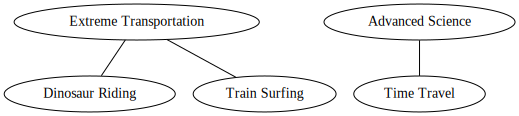
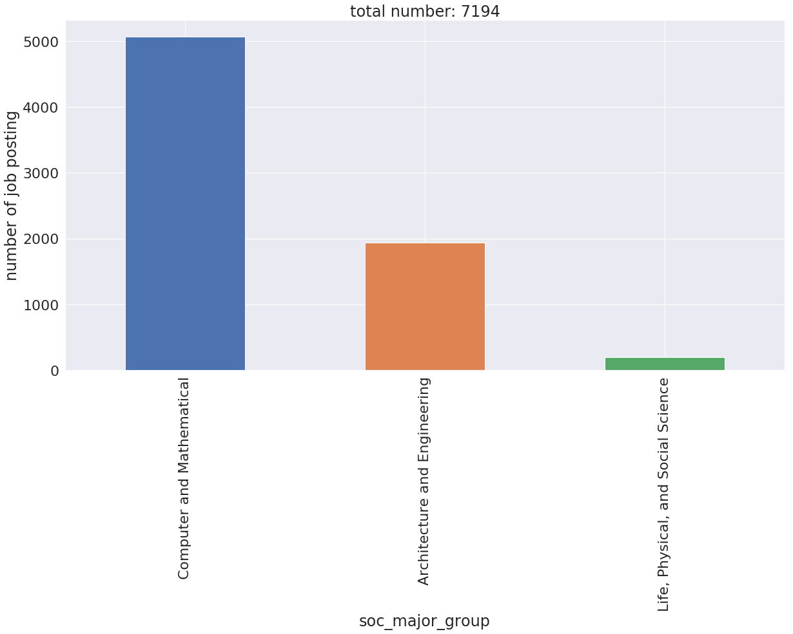
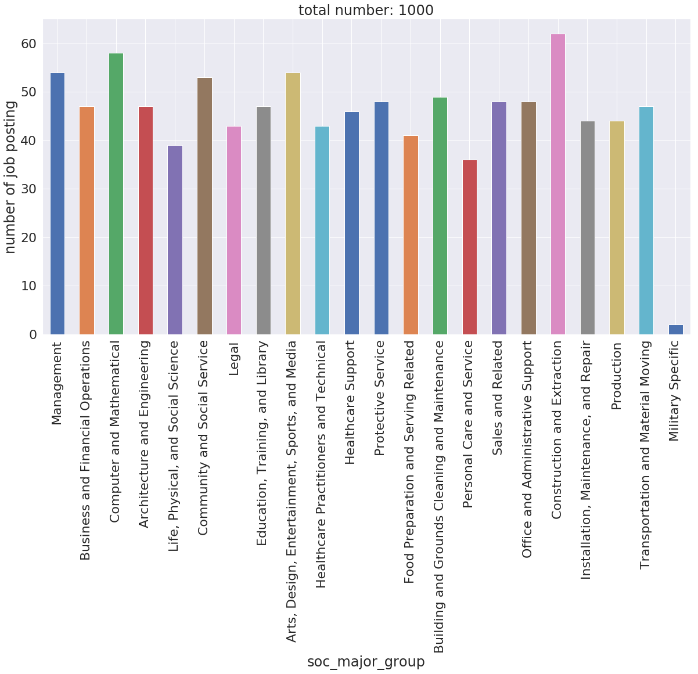

Tour
Skills-ML Tour¶
Skills-ML is an open source software library for applying NLP and ML to labor market data. It allows the user to perform tasks like skill extraction and occupation classification to collections of documents such as job postings, profiles, and course descriptions.
Competency¶
A competency is any expertise or talent that is useful for a job. Developed capacities (e.g. active listening), proficiency with tools or technology (e.g. lancets, Microsoft Word), innate abilities (e.g. originality), and academic knowledge (e.g. medicine) are all considered competencies.
from skills_ml.ontologies import Competency
dinosaur_riding = Competency(
identifier='dino_riding',
name='Dinosaur Riding',
description='Using the back of a dinosaur for transportation'
)
Competency Relationships¶
Competencies are often related to each other. Defining parent-child relationships is a standard building block of existing competency frameworks like ONET and ESCO. A parent-child relationship generally implies that the child is a "type of" the parent.
from skills_ml.ontologies import Competency
from skills_ml.ontologies.viz import display_nodes
dinosaur_riding = Competency(
identifier='12345',
name='Dinosaur Riding',
description='Using the back of a dinosaur for transportation'
)
train_surfing = Competency(
identifier='12346',
name='Train Surfing',
description='Standing on the train while it goes'
)
time_travel = Competency(
identifier='23456',
name='Time Travel',
description='Traveling Through Time'
)
advanced_science = Competency(
identifier='2345',
name='Advanced Science',
)
extreme_transportation = Competency(
identifier='123',
name='Extreme Transportation',
description='Comically dangerous forms of transportation'
)
time_travel.add_parent(advanced_science)
dinosaur_riding.add_parent(extreme_transportation)
train_surfing.add_parent(extreme_transportation)
display_nodes([dinosaur_riding, train_surfing, extreme_transportation, time_travel, advanced_science])

Occupation¶
An occupation is a job or profession that a person can hold. Similar to competencies, these are also often defined hierarchically.
from skills_ml.ontologies import Occupation
extreme_postal_workers = Occupation(identifier='999', name='Extreme Postal Workers')
dino_postal_worker = Occupation(identifier='9998', name='Deliverer of Items to the Past')
train_yard_postal_worker = Occupation(identifier='9999', name='Deliverer of Items to Train Yards')
dino_postal_worker.add_parent(extreme_postal_workers)
train_yard_postal_worker.add_parent(extreme_postal_workers)
display_nodes([extreme_postal_workers, dino_postal_worker, train_yard_postal_worker])

CompetencyOntology¶
A CompetencyOntology is a model of the labor market, or some subset thereof, consisting of a collection of competencies, a collection of occupations, and all of the relationships between them.
from skills_ml.ontologies import CompetencyOntology
from skills_ml.ontologies.viz import display_ontology
ontology = CompetencyOntology()
ontology.add_competency(dinosaur_riding)
ontology.add_competency(train_surfing)
ontology.add_competency(extreme_transportation)
ontology.add_competency(time_travel)
ontology.add_competency(advanced_science)
ontology.add_occupation(dino_postal_worker)
ontology.add_occupation(train_yard_postal_worker)
ontology.add_occupation(extreme_postal_workers)
ontology.add_edge(occupation=dino_postal_worker, competency=dinosaur_riding)
ontology.add_edge(occupation=dino_postal_worker, competency=time_travel)
ontology.add_edge(occupation=train_yard_postal_worker, competency=train_surfing)
display_ontology(ontology)

Prebuilt Ontologies¶
To move on we'll want to level up to a full ontology. The example we'll use is O*NET, built from survey data and maintained by the US Department of Labor. A CompetencyOntology subclass that downloads the source files from the O*NET web site is included in Skills-ML.
from skills_ml.ontologies.onet import Onet
onet = Onet()
onet.print_summary_stats()
Ontology summary statistics for onet
Num competencies: 32030
Num occupations: 1133
Num competency-occupation edges: 107305
Median occupations per competency: 1
Median competencies per occupation: 89
Mean occupations per competency: 3.350245090386837
Mean competencies per occupation: 94.70873786407768
list(onet.competencies)[0:5]
[Competency(identifier=43232108-Rezgo, name=Rezgo, categories=['Technology', 'O*NET T2'], {}),
Competency(identifier=43232605-Hansen CAMA, name=Hansen CAMA, categories=['Technology', 'O*NET T2'], {}),
Competency(identifier=27111526-Arrow squaring devices, name=Arrow squaring devices, categories=['Tools', 'O*NET T2'], {}),
Competency(identifier=48101817-Marzipan tools, name=Marzipan tools, categories=['Tools', 'O*NET T2'], {}),
Competency(identifier=21111507-Commercial fishing line sinkers, name=Commercial fishing line sinkers, categories=['Tools', 'O*NET T2'], {})]
Filtering¶
~34000 competencies and ~1100 occupations is a lot. Let's explore the filtering functionality of the CompetencyOntology to zoom in on a more specific slice.
filter_by filters using edges: the filtering function it expects takes in an edge (between a Competency and Occupation) and returns whether or not it should be in the result. The result takes the form of a new CompetencyOntology, so you can interact with it in the same way as you would the source ontology.
nurse_practitioners = onet.filter_by(lambda edge: 'Nurse Practitioners' in edge.occupation.name)
nurse_practitioners.competencies
{Competency(identifier=1.A.1.a.1, name=Oral Comprehension, categories=['Abilities'], {'competencyText': 'The ability to listen to and understand information and ideas presented through spoken words and sentences.'}),
Competency(identifier=1.A.1.a.2, name=Written Comprehension, categories=['Abilities'], {'competencyText': 'The ability to read and understand information and ideas presented in writing.'}),
Competency(identifier=1.A.1.a.3, name=Oral Expression, categories=['Abilities'], {'competencyText': 'The ability to communicate information and ideas in speaking so others will understand.'}),
Competency(identifier=1.A.1.a.4, name=Written Expression, categories=['Abilities'], {'competencyText': 'The ability to communicate information and ideas in writing so others will understand.'}),
Competency(identifier=1.A.1.b.1, name=Fluency of Ideas, categories=['Abilities'], {'competencyText': 'The ability to come up with a number of ideas about a topic (the number of ideas is important, not their quality, correctness, or creativity).'}),
Competency(identifier=1.A.1.b.2, name=Originality, categories=['Abilities'], {'competencyText': 'The ability to come up with unusual or clever ideas about a given topic or situation, or to develop creative ways to solve a problem.'}),
Competency(identifier=1.A.1.b.3, name=Problem Sensitivity, categories=['Abilities'], {'competencyText': 'The ability to tell when something is wrong or is likely to go wrong. It does not involve solving the problem, only recognizing there is a problem.'}),
Competency(identifier=1.A.1.b.4, name=Deductive Reasoning, categories=['Abilities'], {'competencyText': 'The ability to apply general rules to specific problems to produce answers that make sense.'}),
Competency(identifier=1.A.1.b.5, name=Inductive Reasoning, categories=['Abilities'], {'competencyText': 'The ability to combine pieces of information to form general rules or conclusions (includes finding a relationship among seemingly unrelated events).'}),
Competency(identifier=1.A.1.b.6, name=Information Ordering, categories=['Abilities'], {'competencyText': 'The ability to arrange things or actions in a certain order or pattern according to a specific rule or set of rules (e.g., patterns of numbers, letters, words, pictures, mathematical operations).'}),
Competency(identifier=1.A.1.b.7, name=Category Flexibility, categories=['Abilities'], {'competencyText': 'The ability to generate or use different sets of rules for combining or grouping things in different ways.'}),
Competency(identifier=1.A.1.c.1, name=Mathematical Reasoning, categories=['Abilities'], {'competencyText': 'The ability to choose the right mathematical methods or formulas to solve a problem.'}),
Competency(identifier=1.A.1.d.1, name=Memorization, categories=['Abilities'], {'competencyText': 'The ability to remember information such as words, numbers, pictures, and procedures.'}),
Competency(identifier=1.A.1.e.1, name=Speed of Closure, categories=['Abilities'], {'competencyText': 'The ability to quickly make sense of, combine, and organize information into meaningful patterns.'}),
Competency(identifier=1.A.1.e.2, name=Flexibility of Closure, categories=['Abilities'], {'competencyText': 'The ability to identify or detect a known pattern (a figure, object, word, or sound) that is hidden in other distracting material.'}),
Competency(identifier=1.A.1.e.3, name=Perceptual Speed, categories=['Abilities'], {'competencyText': 'The ability to quickly and accurately compare similarities and differences among sets of letters, numbers, objects, pictures, or patterns. The things to be compared may be presented at the same time or one after the other. This ability also includes comparing a presented object with a remembered object.'}),
Competency(identifier=1.A.2.a.1, name=Arm-Hand Steadiness, categories=['Abilities'], {'competencyText': 'The ability to keep your hand and arm steady while moving your arm or while holding your arm and hand in one position.'}),
Competency(identifier=1.A.2.a.3, name=Finger Dexterity, categories=['Abilities'], {'competencyText': 'The ability to make precisely coordinated movements of the fingers of one or both hands to grasp, manipulate, or assemble very small objects.'}),
Competency(identifier=1.A.4.a.1, name=Near Vision, categories=['Abilities'], {'competencyText': 'The ability to see details at close range (within a few feet of the observer).'}),
Competency(identifier=1.A.4.b.4, name=Speech Recognition, categories=['Abilities'], {'competencyText': 'The ability to identify and understand the speech of another person.'}),
Competency(identifier=1.A.4.b.5, name=Speech Clarity, categories=['Abilities'], {'competencyText': 'The ability to speak clearly so others can understand you.'}),
Competency(identifier=2.A.1.a, name=Reading Comprehension, categories=['Skills'], {'competencyText': 'Understanding written sentences and paragraphs in work related documents.'}),
Competency(identifier=2.A.1.b, name=Active Listening, categories=['Skills'], {'competencyText': 'Giving full attention to what other people are saying, taking time to understand the points being made, asking questions as appropriate, and not interrupting at inappropriate times.'}),
Competency(identifier=2.A.1.c, name=Writing, categories=['Skills'], {'competencyText': 'Communicating effectively in writing as appropriate for the needs of the audience.'}),
Competency(identifier=2.A.1.d, name=Speaking, categories=['Skills'], {'competencyText': 'Talking to others to convey information effectively.'}),
Competency(identifier=2.A.1.f, name=Science, categories=['Skills'], {'competencyText': 'Using scientific rules and methods to solve problems.'}),
Competency(identifier=2.A.2.a, name=Critical Thinking, categories=['Skills'], {'competencyText': 'Using logic and reasoning to identify the strengths and weaknesses of alternative solutions, conclusions or approaches to problems.'}),
Competency(identifier=2.A.2.b, name=Active Learning, categories=['Skills'], {'competencyText': 'Understanding the implications of new information for both current and future problem-solving and decision-making.'}),
Competency(identifier=2.A.2.c, name=Learning Strategies, categories=['Skills'], {'competencyText': 'Selecting and using training/instructional methods and procedures appropriate for the situation when learning or teaching new things.'}),
Competency(identifier=2.A.2.d, name=Monitoring, categories=['Skills'], {'competencyText': 'Monitoring/Assessing performance of yourself, other individuals, or organizations to make improvements or take corrective action.'}),
Competency(identifier=2.B.1.a, name=Social Perceptiveness, categories=['Skills'], {'competencyText': "Being aware of others' reactions and understanding why they react as they do."}),
Competency(identifier=2.B.1.b, name=Coordination, categories=['Skills'], {'competencyText': "Adjusting actions in relation to others' actions."}),
Competency(identifier=2.B.1.c, name=Persuasion, categories=['Skills'], {'competencyText': 'Persuading others to change their minds or behavior.'}),
Competency(identifier=2.B.1.d, name=Negotiation, categories=['Skills'], {'competencyText': 'Bringing others together and trying to reconcile differences.'}),
Competency(identifier=2.B.1.e, name=Instructing, categories=['Skills'], {'competencyText': 'Teaching others how to do something.'}),
Competency(identifier=2.B.1.f, name=Service Orientation, categories=['Skills'], {'competencyText': 'Actively looking for ways to help people.'}),
Competency(identifier=2.B.2.i, name=Complex Problem Solving, categories=['Skills'], {'competencyText': 'Identifying complex problems and reviewing related information to develop and evaluate options and implement solutions.'}),
Competency(identifier=2.B.3.a, name=Operations Analysis, categories=['Skills'], {'competencyText': 'Analyzing needs and product requirements to create a design.'}),
Competency(identifier=2.B.4.e, name=Judgment and Decision Making, categories=['Skills'], {'competencyText': 'Considering the relative costs and benefits of potential actions to choose the most appropriate one.'}),
Competency(identifier=2.B.4.g, name=Systems Analysis, categories=['Skills'], {'competencyText': 'Determining how a system should work and how changes in conditions, operations, and the environment will affect outcomes.'}),
Competency(identifier=2.B.4.h, name=Systems Evaluation, categories=['Skills'], {'competencyText': 'Identifying measures or indicators of system performance and the actions needed to improve or correct performance, relative to the goals of the system.'}),
Competency(identifier=2.B.5.a, name=Time Management, categories=['Skills'], {'competencyText': "Managing one's own time and the time of others."}),
Competency(identifier=2.B.5.d, name=Management of Personnel Resources, categories=['Skills'], {'competencyText': 'Motivating, developing, and directing people as they work, identifying the best people for the job.'}),
Competency(identifier=2.C.1.b, name=Clerical, categories=['Knowledge'], {'competencyText': 'Knowledge of administrative and clerical procedures and systems such as word processing, managing files and records, stenography and transcription, designing forms, and other office procedures and terminology.'}),
Competency(identifier=2.C.1.e, name=Customer and Personal Service, categories=['Knowledge'], {'competencyText': 'Knowledge of principles and processes for providing customer and personal services. This includes customer needs assessment, meeting quality standards for services, and evaluation of customer satisfaction.'}),
Competency(identifier=2.C.3.a, name=Computers and Electronics, categories=['Knowledge'], {'competencyText': 'Knowledge of circuit boards, processors, chips, electronic equipment, and computer hardware and software, including applications and programming.'}),
Competency(identifier=2.C.4.a, name=Mathematics, categories=['Knowledge'], {'competencyText': 'Knowledge of arithmetic, algebra, geometry, calculus, statistics, and their applications.'}),
Competency(identifier=2.C.4.c, name=Chemistry, categories=['Knowledge'], {'competencyText': 'Knowledge of the chemical composition, structure, and properties of substances and of the chemical processes and transformations that they undergo. This includes uses of chemicals and their interactions, danger signs, production techniques, and disposal methods.'}),
Competency(identifier=2.C.4.d, name=Biology, categories=['Knowledge'], {'competencyText': 'Knowledge of plant and animal organisms, their tissues, cells, functions, interdependencies, and interactions with each other and the environment.'}),
Competency(identifier=2.C.4.e, name=Psychology, categories=['Knowledge'], {'competencyText': 'Knowledge of human behavior and performance; individual differences in ability, personality, and interests; learning and motivation; psychological research methods; and the assessment and treatment of behavioral and affective disorders.'}),
Competency(identifier=2.C.4.f, name=Sociology and Anthropology, categories=['Knowledge'], {'competencyText': 'Knowledge of group behavior and dynamics, societal trends and influences, human migrations, ethnicity, cultures and their history and origins.'}),
Competency(identifier=2.C.5.a, name=Medicine and Dentistry, categories=['Knowledge'], {'competencyText': 'Knowledge of the information and techniques needed to diagnose and treat human injuries, diseases, and deformities. This includes symptoms, treatment alternatives, drug properties and interactions, and preventive health-care measures.'}),
Competency(identifier=2.C.5.b, name=Therapy and Counseling, categories=['Knowledge'], {'competencyText': 'Knowledge of principles, methods, and procedures for diagnosis, treatment, and rehabilitation of physical and mental dysfunctions, and for career counseling and guidance.'}),
Competency(identifier=2.C.6, name=Education and Training, categories=['Knowledge'], {'competencyText': 'Knowledge of principles and methods for curriculum and training design, teaching and instruction for individuals and groups, and the measurement of training effects.'}),
Competency(identifier=2.C.7.a, name=English Language, categories=['Knowledge'], {'competencyText': 'Knowledge of the structure and content of the English language including the meaning and spelling of words, rules of composition, and grammar.'}),
Competency(identifier=2.C.7.e, name=Philosophy and Theology, categories=['Knowledge'], {'competencyText': 'Knowledge of different philosophical systems and religions. This includes their basic principles, values, ethics, ways of thinking, customs, practices, and their impact on human culture.'}),
Competency(identifier=2.C.8.a, name=Public Safety and Security, categories=['Knowledge'], {'competencyText': 'Knowledge of relevant equipment, policies, procedures, and strategies to promote effective local, state, or national security operations for the protection of people, data, property, and institutions.'}),
Competency(identifier=2.C.8.b, name=Law and Government, categories=['Knowledge'], {'competencyText': 'Knowledge of laws, legal codes, court procedures, precedents, government regulations, executive orders, agency rules, and the democratic political process.'}),
Competency(identifier=2.C.9.b, name=Communications and Media, categories=['Knowledge'], {'competencyText': 'Knowledge of media production, communication, and dissemination techniques and methods. This includes alternative ways to inform and entertain via written, oral, and visual media.'}),
Competency(identifier=41103901-Microhematocrit centrifuges, name=Microhematocrit centrifuges, categories=['Tools', 'O*NET T2'], {}),
Competency(identifier=41104102-Lancets, name=Lancets, categories=['Tools', 'O*NET T2'], {}),
Competency(identifier=41104104-Tourniquets, name=Tourniquets, categories=['Tools', 'O*NET T2'], {}),
Competency(identifier=41104107-Evacuated blood collection tubes, name=Evacuated blood collection tubes, categories=['Tools', 'O*NET T2'], {}),
Competency(identifier=41104118-Specimen collection containers, name=Specimen collection containers, categories=['Tools', 'O*NET T2'], {}),
Competency(identifier=41104403-Tissue culture incubators, name=Tissue culture incubators, categories=['Tools', 'O*NET T2'], {}),
Competency(identifier=41111709-Binocular light compound microscopes, name=Binocular light compound microscopes, categories=['Tools', 'O*NET T2'], {}),
Competency(identifier=41115807-Hemoglobin analyzers, name=Hemoglobin analyzers, categories=['Tools', 'O*NET T2'], {}),
Competency(identifier=41116138-Urinalysis test strips, name=Urinalysis test strips, categories=['Tools', 'O*NET T2'], {}),
Competency(identifier=41116201-Glucometers, name=Glucometers, categories=['Tools', 'O*NET T2'], {}),
Competency(identifier=42131606-Protective face shields, name=Protective face shields, categories=['Tools', 'O*NET T2'], {}),
Competency(identifier=42131612-Protective gowns, name=Protective gowns, categories=['Tools', 'O*NET T2'], {}),
Competency(identifier=42132203-Medical examination protective gloves, name=Medical examination protective gloves, categories=['Tools', 'O*NET T2'], {}),
Competency(identifier=42141807-Transcutaneous electric nerve stimulation TENS equipment, name=Transcutaneous electric nerve stimulation TENS equipment, categories=['Tools', 'O*NET T2'], {}),
Competency(identifier=42142404-Nasal suctioning equipment, name=Nasal suctioning equipment, categories=['Tools', 'O*NET T2'], {}),
Competency(identifier=42142404-Oral suctioning equipment, name=Oral suctioning equipment, categories=['Tools', 'O*NET T2'], {}),
Competency(identifier=42142404-Tracheal suctioning equipment, name=Tracheal suctioning equipment, categories=['Tools', 'O*NET T2'], {}),
Competency(identifier=42142509-Epidural catheters, name=Epidural catheters, categories=['Tools', 'O*NET T2'], {}),
Competency(identifier=42142532-Pericardiocentesis kits, name=Pericardiocentesis kits, categories=['Tools', 'O*NET T2'], {}),
Competency(identifier=42142537-Thoracentesis kits, name=Thoracentesis kits, categories=['Tools', 'O*NET T2'], {}),
Competency(identifier=42142609-Hypodermic syringes, name=Hypodermic syringes, categories=['Tools', 'O*NET T2'], {}),
Competency(identifier=42142616-Blood drawing syringes, name=Blood drawing syringes, categories=['Tools', 'O*NET T2'], {}),
Competency(identifier=42142715-Urinary catheters, name=Urinary catheters, categories=['Tools', 'O*NET T2'], {}),
Competency(identifier=42144102-Chest tubes, name=Chest tubes, categories=['Tools', 'O*NET T2'], {}),
Competency(identifier=42171608-Head immobilization devices, name=Head immobilization devices, categories=['Tools', 'O*NET T2'], {}),
Competency(identifier=42171613-Spinal immobilization equipment, name=Spinal immobilization equipment, categories=['Tools', 'O*NET T2'], {}),
Competency(identifier=42172101-Automated external defibrillators AED, name=Automated external defibrillators AED, categories=['Tools', 'O*NET T2'], {}),
Competency(identifier=42172102-Cardiopulmonary resuscitation CPR face shields, name=Cardiopulmonary resuscitation CPR face shields, categories=['Tools', 'O*NET T2'], {}),
Competency(identifier=42181602-Electronic blood pressure monitors, name=Electronic blood pressure monitors, categories=['Tools', 'O*NET T2'], {}),
Competency(identifier=42181602-Pediatric blood pressure cuffs, name=Pediatric blood pressure cuffs, categories=['Tools', 'O*NET T2'], {}),
Competency(identifier=42181701-Electrocardiography EKG machines, name=Electrocardiography EKG machines, categories=['Tools', 'O*NET T2'], {}),
Competency(identifier=42181701-Portable electrocardiography EKG machines, name=Portable electrocardiography EKG machines, categories=['Tools', 'O*NET T2'], {}),
Competency(identifier=42181713-Holter monitors, name=Holter monitors, categories=['Tools', 'O*NET T2'], {}),
Competency(identifier=42181801-Pulse oximeters, name=Pulse oximeters, categories=['Tools', 'O*NET T2'], {}),
Competency(identifier=42181902-Intracranial pressure monitors, name=Intracranial pressure monitors, categories=['Tools', 'O*NET T2'], {}),
Competency(identifier=42181903-Cardiac monitors, name=Cardiac monitors, categories=['Tools', 'O*NET T2'], {}),
Competency(identifier=42181903-Hemodynamic monitors, name=Hemodynamic monitors, categories=['Tools', 'O*NET T2'], {}),
Competency(identifier=42182005-Ophthalmoscopes, name=Ophthalmoscopes, categories=['Tools', 'O*NET T2'], {}),
Competency(identifier=42182005-Otoscopes, name=Otoscopes, categories=['Tools', 'O*NET T2'], {}),
Competency(identifier=42182013-Vaginal exam specula, name=Vaginal exam specula, categories=['Tools', 'O*NET T2'], {}),
Competency(identifier=42182103-Mechanical stethoscopes, name=Mechanical stethoscopes, categories=['Tools', 'O*NET T2'], {}),
Competency(identifier=42182201-Digital medical thermometers, name=Digital medical thermometers, categories=['Tools', 'O*NET T2'], {}),
Competency(identifier=42182302-Reflex hammers, name=Reflex hammers, categories=['Tools', 'O*NET T2'], {}),
Competency(identifier=42182412-Diagnostic tuning forks, name=Diagnostic tuning forks, categories=['Tools', 'O*NET T2'], {}),
Competency(identifier=42182416-Tympanometers, name=Tympanometers, categories=['Tools', 'O*NET T2'], {}),
Competency(identifier=42182805-Medical scales, name=Medical scales, categories=['Tools', 'O*NET T2'], {}),
Competency(identifier=42183001-Snellen eye charts, name=Snellen eye charts, categories=['Tools', 'O*NET T2'], {}),
Competency(identifier=42183001-Visual acuity testing cards, name=Visual acuity testing cards, categories=['Tools', 'O*NET T2'], {}),
Competency(identifier=42192401-Crash carts, name=Crash carts, categories=['Tools', 'O*NET T2'], {}),
Competency(identifier=42201701-Doppler ultrasound equipment, name=Doppler ultrasound equipment, categories=['Tools', 'O*NET T2'], {}),
Competency(identifier=42203402-Angiocaths, name=Angiocaths, categories=['Tools', 'O*NET T2'], {}),
Competency(identifier=42203402-Pulmonary artery catheters, name=Pulmonary artery catheters, categories=['Tools', 'O*NET T2'], {}),
Competency(identifier=42203501-Pacemaker analyzers, name=Pacemaker analyzers, categories=['Tools', 'O*NET T2'], {}),
Competency(identifier=42203501-Transcutaneous pacemakers, name=Transcutaneous pacemakers, categories=['Tools', 'O*NET T2'], {}),
Competency(identifier=42211502-Crutches, name=Crutches, categories=['Tools', 'O*NET T2'], {}),
Competency(identifier=42221501-Arterial line catheters, name=Arterial line catheters, categories=['Tools', 'O*NET T2'], {}),
Competency(identifier=42221503-Multiple lumen central line catheters, name=Multiple lumen central line catheters, categories=['Tools', 'O*NET T2'], {}),
Competency(identifier=42221506-Umbilical catheters, name=Umbilical catheters, categories=['Tools', 'O*NET T2'], {}),
Competency(identifier=42221509-Intravenous IV administration sets, name=Intravenous IV administration sets, categories=['Tools', 'O*NET T2'], {}),
Competency(identifier=42221509-Intravenous IV cutdown trays, name=Intravenous IV cutdown trays, categories=['Tools', 'O*NET T2'], {}),
Competency(identifier=42222001-Intravenous IV infusion pumps, name=Intravenous IV infusion pumps, categories=['Tools', 'O*NET T2'], {}),
Competency(identifier=42231701-Nasogastric tubes, name=Nasogastric tubes, categories=['Tools', 'O*NET T2'], {}),
Competency(identifier=42241507-Orthopedic splinting equipment, name=Orthopedic splinting equipment, categories=['Tools', 'O*NET T2'], {}),
Competency(identifier=42241705-Lower extremity braces, name=Lower extremity braces, categories=['Tools', 'O*NET T2'], {}),
Competency(identifier=42241707-Walking braces, name=Walking braces, categories=['Tools', 'O*NET T2'], {}),
Competency(identifier=42241801-Upper extremity braces, name=Upper extremity braces, categories=['Tools', 'O*NET T2'], {}),
Competency(identifier=42241802-Back braces, name=Back braces, categories=['Tools', 'O*NET T2'], {}),
Competency(identifier=42241803-Neck braces, name=Neck braces, categories=['Tools', 'O*NET T2'], {}),
Competency(identifier=42242103-Halo traction equipment, name=Halo traction equipment, categories=['Tools', 'O*NET T2'], {}),
Competency(identifier=42271501-Apnea monitors, name=Apnea monitors, categories=['Tools', 'O*NET T2'], {}),
Competency(identifier=42271502-Arterial blood gas monitoring equipment, name=Arterial blood gas monitoring equipment, categories=['Tools', 'O*NET T2'], {}),
Competency(identifier=42271602-Incentive spirometers, name=Incentive spirometers, categories=['Tools', 'O*NET T2'], {}),
Competency(identifier=42271604-Peak flowmeters, name=Peak flowmeters, categories=['Tools', 'O*NET T2'], {}),
Competency(identifier=42271702-Oxygen concentrators, name=Oxygen concentrators, categories=['Tools', 'O*NET T2'], {}),
Competency(identifier=42271707-Oxygen flowmeters, name=Oxygen flowmeters, categories=['Tools', 'O*NET T2'], {}),
Competency(identifier=42271708-Oxygen delivery masks, name=Oxygen delivery masks, categories=['Tools', 'O*NET T2'], {}),
Competency(identifier=42271710-Nasal catheters, name=Nasal catheters, categories=['Tools', 'O*NET T2'], {}),
Competency(identifier=42271802-Handheld nebulizers, name=Handheld nebulizers, categories=['Tools', 'O*NET T2'], {}),
Competency(identifier=42271903-Endotracheal ET tubes, name=Endotracheal ET tubes, categories=['Tools', 'O*NET T2'], {}),
Competency(identifier=42271910-Tracheotomy sets, name=Tracheotomy sets, categories=['Tools', 'O*NET T2'], {}),
Competency(identifier=42272001-Fiberoptic laryngoscopes, name=Fiberoptic laryngoscopes, categories=['Tools', 'O*NET T2'], {}),
Competency(identifier=42272017-Intubation sets, name=Intubation sets, categories=['Tools', 'O*NET T2'], {}),
Competency(identifier=42272201-Mechanical intermittent positive pressure ventilators, name=Mechanical intermittent positive pressure ventilators, categories=['Tools', 'O*NET T2'], {}),
Competency(identifier=42272203-Bilevel positive airway pressure BiPAP ventilators, name=Bilevel positive airway pressure BiPAP ventilators, categories=['Tools', 'O*NET T2'], {}),
Competency(identifier=42291613-Surgical scalpels, name=Surgical scalpels, categories=['Tools', 'O*NET T2'], {}),
Competency(identifier=42291614-Straight surgical scissors, name=Straight surgical scissors, categories=['Tools', 'O*NET T2'], {}),
Competency(identifier=42291704-Biopsy punches, name=Biopsy punches, categories=['Tools', 'O*NET T2'], {}),
Competency(identifier=42291802-Mosquito hemostats, name=Mosquito hemostats, categories=['Tools', 'O*NET T2'], {}),
Competency(identifier=42294702-Intra-aortic balloon pumps IABP, name=Intra-aortic balloon pumps IABP, categories=['Tools', 'O*NET T2'], {}),
Competency(identifier=42294717-Ventricular assist devices VAD, name=Ventricular assist devices VAD, categories=['Tools', 'O*NET T2'], {}),
Competency(identifier=42294802-Fiberoptic endoscopes, name=Fiberoptic endoscopes, categories=['Tools', 'O*NET T2'], {}),
Competency(identifier=42294802-Flexible sigmoidoscopes, name=Flexible sigmoidoscopes, categories=['Tools', 'O*NET T2'], {}),
Competency(identifier=42295104-Electrosurgical cauterization machines, name=Electrosurgical cauterization machines, categories=['Tools', 'O*NET T2'], {}),
Competency(identifier=42295119-Argon lasers, name=Argon lasers, categories=['Tools', 'O*NET T2'], {}),
Competency(identifier=42295119-Carbon dioxide CO2 lasers, name=Carbon dioxide CO2 lasers, categories=['Tools', 'O*NET T2'], {}),
Competency(identifier=42295119-Pulsed dye lasers, name=Pulsed dye lasers, categories=['Tools', 'O*NET T2'], {}),
Competency(identifier=42295122-Pneumatic tourniquets, name=Pneumatic tourniquets, categories=['Tools', 'O*NET T2'], {}),
Competency(identifier=42312008-Surgical staple removers, name=Surgical staple removers, categories=['Tools', 'O*NET T2'], {}),
Competency(identifier=42312010-Skin staplers, name=Skin staplers, categories=['Tools', 'O*NET T2'], {}),
Competency(identifier=42312202-Suturing kits, name=Suturing kits, categories=['Tools', 'O*NET T2'], {}),
Competency(identifier=43191507-Multi-line telephone systems, name=Multi-line telephone systems, categories=['Tools', 'O*NET T2'], {}),
Competency(identifier=43211503-Laptop computers, name=Laptop computers, categories=['Tools', 'O*NET T2'], {}),
Competency(identifier=43211504-Personal digital assistants PDA, name=Personal digital assistants PDA, categories=['Tools', 'O*NET T2'], {}),
Competency(identifier=43211508-Personal computers, name=Personal computers, categories=['Tools', 'O*NET T2'], {}),
Competency(identifier=43211509-Tablet computers, name=Tablet computers, categories=['Tools', 'O*NET T2'], {}),
Competency(identifier=43231507-Microsoft SharePoint, name=Microsoft SharePoint, categories=['Technology', 'O*NET T2'], {}),
Competency(identifier=43231513-Microsoft Office, name=Microsoft Office, categories=['Technology', 'O*NET T2'], {}),
Competency(identifier=43232104-Microsoft Word, name=Microsoft Word, categories=['Technology', 'O*NET T2'], {}),
Competency(identifier=43232106-Microsoft PowerPoint, name=Microsoft PowerPoint, categories=['Technology', 'O*NET T2'], {}),
Competency(identifier=43232110-Microsoft Excel, name=Microsoft Excel, categories=['Technology', 'O*NET T2'], {}),
Competency(identifier=43232306-Microsoft Access, name=Microsoft Access, categories=['Technology', 'O*NET T2'], {}),
Competency(identifier=43232610-Allscripts Professional EHR, name=Allscripts Professional EHR, categories=['Technology', 'O*NET T2'], {}),
Competency(identifier=43232610-Amkai AmkaiCharts, name=Amkai AmkaiCharts, categories=['Technology', 'O*NET T2'], {}),
Competency(identifier=43232610-Bizmatics PrognoCIS EMR, name=Bizmatics PrognoCIS EMR, categories=['Technology', 'O*NET T2'], {}),
Competency(identifier=43232610-Cerner Millennium, name=Cerner Millennium, categories=['Technology', 'O*NET T2'], {}),
Competency(identifier=43232610-GE Healthcare Centricity EMR, name=GE Healthcare Centricity EMR, categories=['Technology', 'O*NET T2'], {}),
Competency(identifier=43232610-Healthcare common procedure coding system HCPCS, name=Healthcare common procedure coding system HCPCS, categories=['Technology', 'O*NET T2'], {}),
Competency(identifier=43232610-MEDITECH software, name=MEDITECH software, categories=['Technology', 'O*NET T2'], {}),
Competency(identifier=43232610-Medical condition coding software, name=Medical condition coding software, categories=['Technology', 'O*NET T2'], {}),
Competency(identifier=43232610-Medical procedure coding software, name=Medical procedure coding software, categories=['Technology', 'O*NET T2'], {}),
Competency(identifier=43232610-Medscribbler Enterprise, name=Medscribbler Enterprise, categories=['Technology', 'O*NET T2'], {}),
Competency(identifier=43232610-MicroFour PracticeStudio.NET EMR, name=MicroFour PracticeStudio.NET EMR, categories=['Technology', 'O*NET T2'], {}),
Competency(identifier=43232610-NextGen Healthcare Information Systems EMR, name=NextGen Healthcare Information Systems EMR, categories=['Technology', 'O*NET T2'], {}),
Competency(identifier=43232610-PCC Pediatric Partner, name=PCC Pediatric Partner, categories=['Technology', 'O*NET T2'], {}),
Competency(identifier=43232610-SOAPware EMR, name=SOAPware EMR, categories=['Technology', 'O*NET T2'], {}),
Competency(identifier=43232610-StatCom Patient Flow Logistics Enterprise Suite, name=StatCom Patient Flow Logistics Enterprise Suite, categories=['Technology', 'O*NET T2'], {}),
Competency(identifier=43232610-SynaMed EMR, name=SynaMed EMR, categories=['Technology', 'O*NET T2'], {}),
Competency(identifier=43232610-Texas Medical Software SpringCharts EMR, name=Texas Medical Software SpringCharts EMR, categories=['Technology', 'O*NET T2'], {}),
Competency(identifier=43232610-e-MDs software, name=e-MDs software, categories=['Technology', 'O*NET T2'], {}),
Competency(identifier=43232610-eClinicalWorks, name=eClinicalWorks, categories=['Technology', 'O*NET T2'], {}),
Competency(identifier=43232705-Microsoft Internet Explorer, name=Microsoft Internet Explorer, categories=['Technology', 'O*NET T2'], {}),
Competency(identifier=43232705-Web browser software, name=Web browser software, categories=['Technology', 'O*NET T2'], {}),
Competency(identifier=43233501-Microsoft Outlook, name=Microsoft Outlook, categories=['Technology', 'O*NET T2'], {}),
Competency(identifier=46181804-Safety goggles, name=Safety goggles, categories=['Tools', 'O*NET T2'], {})}
That's a big list of competencies. Each competency has a list of categories, so let's get all of the different possible categories
set(cat for competency in nurse_practitioners.competencies for cat in competency.categories)
{'Abilities', 'Knowledge', 'O*NET T2', 'Skills', 'Technology', 'Tools'}
So we can ask questions like: what type of Knowledge do nurse practitioners need?
[competency for competency in nurse_practitioners.competencies if 'Knowledge' in competency.categories]
[Competency(identifier=2.C.7.a, name=English Language, categories=['Knowledge'], {'competencyText': 'Knowledge of the structure and content of the English language including the meaning and spelling of words, rules of composition, and grammar.'}),
Competency(identifier=2.C.1.b, name=Clerical, categories=['Knowledge'], {'competencyText': 'Knowledge of administrative and clerical procedures and systems such as word processing, managing files and records, stenography and transcription, designing forms, and other office procedures and terminology.'}),
Competency(identifier=2.C.4.a, name=Mathematics, categories=['Knowledge'], {'competencyText': 'Knowledge of arithmetic, algebra, geometry, calculus, statistics, and their applications.'}),
Competency(identifier=2.C.8.b, name=Law and Government, categories=['Knowledge'], {'competencyText': 'Knowledge of laws, legal codes, court procedures, precedents, government regulations, executive orders, agency rules, and the democratic political process.'}),
Competency(identifier=2.C.6, name=Education and Training, categories=['Knowledge'], {'competencyText': 'Knowledge of principles and methods for curriculum and training design, teaching and instruction for individuals and groups, and the measurement of training effects.'}),
Competency(identifier=2.C.4.f, name=Sociology and Anthropology, categories=['Knowledge'], {'competencyText': 'Knowledge of group behavior and dynamics, societal trends and influences, human migrations, ethnicity, cultures and their history and origins.'}),
Competency(identifier=2.C.7.e, name=Philosophy and Theology, categories=['Knowledge'], {'competencyText': 'Knowledge of different philosophical systems and religions. This includes their basic principles, values, ethics, ways of thinking, customs, practices, and their impact on human culture.'}),
Competency(identifier=2.C.4.d, name=Biology, categories=['Knowledge'], {'competencyText': 'Knowledge of plant and animal organisms, their tissues, cells, functions, interdependencies, and interactions with each other and the environment.'}),
Competency(identifier=2.C.4.c, name=Chemistry, categories=['Knowledge'], {'competencyText': 'Knowledge of the chemical composition, structure, and properties of substances and of the chemical processes and transformations that they undergo. This includes uses of chemicals and their interactions, danger signs, production techniques, and disposal methods.'}),
Competency(identifier=2.C.8.a, name=Public Safety and Security, categories=['Knowledge'], {'competencyText': 'Knowledge of relevant equipment, policies, procedures, and strategies to promote effective local, state, or national security operations for the protection of people, data, property, and institutions.'}),
Competency(identifier=2.C.5.a, name=Medicine and Dentistry, categories=['Knowledge'], {'competencyText': 'Knowledge of the information and techniques needed to diagnose and treat human injuries, diseases, and deformities. This includes symptoms, treatment alternatives, drug properties and interactions, and preventive health-care measures.'}),
Competency(identifier=2.C.5.b, name=Therapy and Counseling, categories=['Knowledge'], {'competencyText': 'Knowledge of principles, methods, and procedures for diagnosis, treatment, and rehabilitation of physical and mental dysfunctions, and for career counseling and guidance.'}),
Competency(identifier=2.C.4.e, name=Psychology, categories=['Knowledge'], {'competencyText': 'Knowledge of human behavior and performance; individual differences in ability, personality, and interests; learning and motivation; psychological research methods; and the assessment and treatment of behavioral and affective disorders.'}),
Competency(identifier=2.C.9.b, name=Communications and Media, categories=['Knowledge'], {'competencyText': 'Knowledge of media production, communication, and dissemination techniques and methods. This includes alternative ways to inform and entertain via written, oral, and visual media.'}),
Competency(identifier=2.C.1.e, name=Customer and Personal Service, categories=['Knowledge'], {'competencyText': 'Knowledge of principles and processes for providing customer and personal services. This includes customer needs assessment, meeting quality standards for services, and evaluation of customer satisfaction.'}),
Competency(identifier=2.C.3.a, name=Computers and Electronics, categories=['Knowledge'], {'competencyText': 'Knowledge of circuit boards, processors, chips, electronic equipment, and computer hardware and software, including applications and programming.'})]
There are many other questions we can ask of just an ontology, but the real value will come from combining the knowledge contained in the ontology with larger unstructured datasets. In this next section we will explore how Skills-ML helps the user deal with such datasets as job postings, profiles, or course descriptions.
Spirit of Skills-ML¶
- Dataflow Programming:
Skills-ML's design philosophy builds on dataflow programming or so called data streaming to process very large datasets (larger than RAM; potentially infinite). - One-pass algorithm: Data points are processed one at a time.
- Lazy evaluation: an evaluation strategy which delays the evaluation of an expression until its value is needed. In
Skills-ML, most of the classes and functions here incorporates the concept ofIterableorGenerator. We build the expression first and evaluate later.
Creating Dataset¶
Before we do anything with the context, we need dataset. Skills-ML makes use of schema.org’s JobPosting standard. As it has been in use for a long time, some open sources are already using this standard, which is easy to import. Other job posting data sources are converted into the schema.org Schema and all work on job postings is done using this standard schema.
In Skills-ML, job_postings module has all the functionalities to create the data we need for later usage.
Common Schema¶
We have an useful function to help create the data generator from s3.
JobPostingCollectionFromS3: Stream job posting from s3.JobPostingCollectionSample: Stream a finite number of job postings stored within the library.
However, we are not restrcted to just JobPosting data. One can easily create whatever data generator such as ProfileGenerator or CourseGenerator.
For example, we want to use the Vrigina Dataset which is an open data set of job postings. We just have to create a job posting generator with some transformation.
from skills_ml.job_postings.raw.virginia import VirginiaTransformer
from urllib.request import urlopen
import json
va_url = "http://opendata.cs.vt.edu/dataset/ab0abac3-2293-4c9d-8d80-22d450254389/resource/074f7e44-9275-4bba-874e-4795e8f6830c/download/openjobs-jobpostings.may-2016.json"
class VAJobposting(object):
def __init__(self, uri):
self.uri = uri
def __iter__(self):
request = urlopen(self.uri)
for line in request.readlines():
raw = json.loads(line)
yield VirginiaTransformer(partner_id="va")._transform(raw)
jobpostings_va = VAJobposting(va_url)
print(len(list(jobpostings_va)))
40098
Filtering¶
To create a good dataset, we might want to have some criteria for choosing the proper job posting based on the task we want to perform, like job postings that have the label information, job postings that belong to certain occupation, or job postings that have rich enough information in the description field.
JobPostingFilterer: Filter common schema job postings through a number of filtering functions.
This function also follows lazy evaluation strategy.
from skills_ml.job_postings.filtering import JobPostingFilterer
def is_tech_jobs(job):
if job['onet_soc_code'][:2] in ['15', '17', '19']:
return True
else:
return False
tech_jobs = JobPostingFilterer(
job_posting_generator=VAJobposting(va_url),
filter_funcs=[is_tech_jobs]
)
from skills_ml.ontologies.onet import majorgroupname
from collections import Counter
import pandas as pd
import matplotlib.pyplot as plt
import matplotlib
import seaborn as sns
sns.set(style="darkgrid", font_scale=2)
%matplotlib inline
# major group distribution plotting function
def plot_major_group_distribution(job_postings):
c = Counter()
for job in job_postings:
c.update([job['onet_soc_code'][:2]])
s = pd.Series(c).sort_index()
s.index = s.index.map(majorgroupname)
ax = s.plot.bar(figsize=(20,10),rot=90)
ax.set_xlabel('soc_major_group')
ax.set_ylabel('number of job posting')
ax.set_title(f"total number: {s.sum()}")
return s
plot_major_group_distribution(tech_jobs)
Computer and Mathematical 5065
Architecture and Engineering 1937
Life, Physical, and Social Science 192
dtype: int64

What if we want to make sure that all the job postings have ONet SOC Code and it's not unknown(first 2 digit 99)? We can define filter functions like these which can be either generic function or lambda function.
def filter_onet_soc_code(job):
if job['onet_soc_code'] and job['onet_soc_code'][:2] != '99':
return True
else:
return False
has_soc = lambda x: x['onet_soc_code']
not_unknown_soc = lambda x: x['onet_soc_code'][:2] != '99'
jobpostings_filtered = JobPostingFilterer(
job_posting_generator=VAJobposting(va_url),
filter_funcs=[has_soc, not_unknown_soc]
)
plot_major_group_distribution(jobpostings_filtered)
Management 6506
Business and Financial Operations 3867
Computer and Mathematical 5065
Architecture and Engineering 1937
Life, Physical, and Social Science 192
Community and Social Service 282
Legal 94
Education, Training, and Library 679
Arts, Design, Entertainment, Sports, and Media 598
Healthcare Practitioners and Technical 3447
Healthcare Support 494
Protective Service 484
Food Preparation and Serving Related 792
Building and Grounds Cleaning and Maintenance 189
Personal Care and Service 97
Sales and Related 1415
Office and Administrative Support 2580
Construction and Extraction 196
Installation, Maintenance, and Repair 832
Production 442
Transportation and Material Moving 2722
Military Specific 2
dtype: int64

Random Sampling¶
Even though we have a lot of data, most of time we don't need all of them to do the analysis. Or we can't even fit all the data into memory to do the analysis. What we need more importantly is a suitable sampled dataset.
JobSampler: Sample job posting by (weighted) reservoir sampling.
Random Sampling from Streaming Data - Reservoir Sampling¶
- "Say you have a stream of items of large and unknown length that we can only iterate over once."
- It's memeory efficient and just one iteration
- There is a great overview of reservoir sampling in https://gregable.com/2007/10/reservoir-sampling.html.
Let's say the original job postings dataset are too much for my Mac Yosemite to do any analysis and I want only 1000 job postings but still preserve the statistical characteristics of the original dataset.
from skills_ml.job_postings.sample import JobSampler
sampler = JobSampler(
job_posting_generator=jobpostings_filtered,
k=1000,
)
plot_major_group_distribution(sampler)
Management 191
Business and Financial Operations 126
Computer and Mathematical 134
Architecture and Engineering 65
Life, Physical, and Social Science 5
Community and Social Service 11
Legal 1
Education, Training, and Library 25
Arts, Design, Entertainment, Sports, and Media 15
Healthcare Practitioners and Technical 106
Healthcare Support 20
Protective Service 16
Food Preparation and Serving Related 27
Building and Grounds Cleaning and Maintenance 5
Personal Care and Service 1
Sales and Related 51
Office and Administrative Support 75
Construction and Extraction 6
Installation, Maintenance, and Repair 19
Production 12
Transportation and Material Moving 89
dtype: int64

Something wrong happened! We are missing Military Occupations! Because military job postings are extremely rare in the original dataset, simple ramdom sampling might result in lack of classes.
Weighted Reservoir Sampling¶
-
How would you sample from a weighted distribution where each element has a given weight associated with it in the stream?
-
For certain task, we need some curated sample. For example, if we want to build a occupation classifier, we want similar amounts of job posting for each occupation.
Now we want to have a more uniform distributed sample across all major groups.
Here we need to provide a weight dictionary in the JobSampler
c = Counter()
for job in jobpostings_filtered:
c.update([job['onet_soc_code'][:2]])
weights = dict()
for key, value in c.items():
weights[key] = max(c.values()) / value
weights
{'11': 1.0,
'15': 1.2845014807502468,
'17': 3.3588022715539494,
'29': 1.8874383521903104,
'41': 4.597879858657244,
'43': 2.521705426356589,
'13': 1.6824411688647531,
'49': 7.819711538461538,
'33': 13.442148760330578,
'27': 10.879598662207357,
'47': 33.19387755102041,
'51': 14.71945701357466,
'35': 8.214646464646465,
'25': 9.581737849779087,
'31': 13.17004048582996,
'19': 33.885416666666664,
'21': 23.070921985815602,
'37': 34.423280423280424,
'53': 2.3901542983100663,
'39': 67.0721649484536,
'23': 69.2127659574468,
'55': 3253.0}
sampler = JobSampler(job_posting_generator=jobpostings_filtered, k=1000, key=lambda x: x['onet_soc_code'][:2], weights=weights)
plot_major_group_distribution(sampler)
Management 54
Business and Financial Operations 47
Computer and Mathematical 58
Architecture and Engineering 47
Life, Physical, and Social Science 39
Community and Social Service 53
Legal 43
Education, Training, and Library 47
Arts, Design, Entertainment, Sports, and Media 54
Healthcare Practitioners and Technical 43
Healthcare Support 46
Protective Service 48
Food Preparation and Serving Related 41
Building and Grounds Cleaning and Maintenance 49
Personal Care and Service 36
Sales and Related 48
Office and Administrative Support 48
Construction and Extraction 62
Installation, Maintenance, and Repair 44
Production 44
Transportation and Material Moving 47
Military Specific 2
dtype: int64

Skill Extraction¶
A common task is extracting competencies from unstructured text. Sometimes this is ontology-based (finding concepts from a known ontology in text), but this is not necessarily true. Skills-ML unites these with a common interface in the SkillExtractor class. The common interface is that every SkillExtractor needs to be able to take in a collection of documents, and yield what we call CandidateSkill objects.
What Is a CandidateSkill?¶
A CandidateSkill is a possible occurrence of a skill/competency in context in some document. It consists of the following fields:
skill_name - The text version of the skill as it appears in the document
matched_skill_identifier - A reference to the skill in some ontology. This may be empty, if no ontology was used to search for skills.
context - The text surrounding the skill in the document. The goal is for a human labeler to be able to use this to determine whether or not the occurrence represents a true skill. How much context is included is up to the algorithm.
start_index - The start index of the skill occurrence within the document string.
confidence - The confidence level the algorithm has in this candidate skill being a true occurrence of a skill. This may be empty, if the algorithm has now way of producing a confidence value.
document_id - A unique identifier for the source document.
document_type - The type of document (examples: Job Posting, Profile, Course Description)
source_object - The entire source document.
skill_extractor_name - The name of the skill extractor algorithm. Every SkillExtractor subclass defines a name property that is used to give processes downstream context about how their output data was produced.
The idea behind the CandidateSkill object is to serve as a common interface between SkillExtractor objects, automatic evaluation methods, and manual evaluation methods.
- A labeling interface might intake CandidateSkill objects for humans to say yes/no to.
- Another type of labeling interface might involve the export of CandidateSkill objects based on what a human highlighted in the interface when shown the entire document
- Unsupervised evaluation metrics may take in one set of CandidateSkills to produce simple descriptive metrics
- Supervised evaluation metrics may take in one set of CandidateSkills from a SkillExtractor and another set of CandidateSkills from a human labeling interface and use the latter to evaluate the former
We'll talk about some of these use cases in more detail later. But for now, let's start with a simple example that uses NLP rules and isn't tied to an ontology. Let's define a method for extracting skills as 'all noun phrases that end in the word skill or skills'. This is a simple method that realistically won't cover all possible occurrences of skills, but this is a start.
from skills_ml.algorithms.skill_extractors import SkillEndingPatternExtractor
from skills_ml.job_postings.common_schema import JobPostingCollectionSample
job_posting_generator = JobPostingCollectionSample()
# instantiate the skill extractor. This class defaults to only considering lines that
# start with a bullet, which doesn't work for this dataset. So we set this flag to False.
skill_extractor = SkillEndingPatternExtractor(only_bulleted_lines=False)
job_posting = next(iter(job_posting_generator))
for candidate_skill in skill_extractor.candidate_skills(job_posting):
print('skill name:', candidate_skill.skill_name)
print('context:', candidate_skill.context)
print('')
skill name: communication skills
context: Excellent client presentation and communication skills as well as strong customer service and organizational skills.
skill name: organizational skills
context: Excellent client presentation and communication skills as well as strong customer service and organizational skills.
skill name: communication skills
context: We are proud to be an equal opportunity employer College degree preferred, 2 - 5 years experience in print and / or online advertising sales and be able to show consistent sales results in previous positions, Knowledge of the IT industry is preferred, Track record of creativity in sales approaches and solutions, Track record of successfully meeting and exceeding sales goals in media sales relevant to 1105 Medias line of business, Excellent client presentation and communication skills as well as strong customer service and organizational skills, The ideal candidate is energetic, self - motivated, team - oriented, and customer - centric, Understanding of how to research potential customers and use online analytics from a sales perspective, Weekly local travel to meet with clients / prospects is required, Minimal non local travel a few times a year is required
skill name: organizational skills
context: We are proud to be an equal opportunity employer College degree preferred, 2 - 5 years experience in print and / or online advertising sales and be able to show consistent sales results in previous positions, Knowledge of the IT industry is preferred, Track record of creativity in sales approaches and solutions, Track record of successfully meeting and exceeding sales goals in media sales relevant to 1105 Medias line of business, Excellent client presentation and communication skills as well as strong customer service and organizational skills, The ideal candidate is energetic, self - motivated, team - oriented, and customer - centric, Understanding of how to research potential customers and use online analytics from a sales perspective, Weekly local travel to meet with clients / prospects is required, Minimal non local travel a few times a year is required
The results for one job posting are modest. Two distinct skill names, each occurring two different times in the document. This is a start.
Now let's try another skill extractor: matching with ONET data.
from skills_ml.algorithms.skill_extractors import ExactMatchSkillExtractor
skill_extractor = ExactMatchSkillExtractor(onet.competency_framework)
for candidate_skill in skill_extractor.candidate_skills(job_posting):
print('skill name:', candidate_skill.skill_name)
print('context:', candidate_skill.context)
print('')
skill name: self
context: The ideal candidate is energetic, self-motivated, team-oriented, and customer-centric.
skill name: self
context: We are proud to be an equal opportunity employer College degree preferred, 2-5 years experience in print and/or online advertising sales and be able to show consistent sales results in previous positions, Knowledge of the IT industry is preferred, Track record of creativity in sales approaches and solutions, Track record of successfully meeting and exceeding sales goals in media sales relevant to 1105 Medias line of business, Excellent client presentation and communication skills as well as strong customer service and organizational skills, The ideal candidate is energetic, self-motivated, team-oriented, and customer-centric, Understanding of how to research potential customers and use online analytics from a sales perspective, Weekly local travel to meet with clients/prospects is required, Minimal non local travel a few times a year is required
Yikes. What is this? As it turns out, 'Self' is a real programming language. But it's not applicable here. Simply searching for skill names has its limitations.
To help with this, there is also the SocScopedExactMatchSkillExtractor. This does exact matching, but only for the occupation that the document is tagged with. This, of course, is only applicable if the document has one. And it needs a full CompetencyOntology to work.
from skills_ml.algorithms.skill_extractors import SocScopedExactMatchSkillExtractor
skill_extractor = SocScopedExactMatchSkillExtractor(onet)
for candidate_skill in skill_extractor.candidate_skills(job_posting):
print('skill name:', candidate_skill.skill_name)
print('context:', candidate_skill.context)
print('')
No results. This is expected: For an occupation that is not related to computer programming, the language 'Self' is likely irrelevant.
Here's a list of all the other skill extractors available.
FuzzyMatchSkillExtractor - Similar to the ExactMatchSkillExtractor, but using a configurable edit distance to find skill names that are very close to the targets.
AbilityEndingPatternExtractor - Similar to the SkillEndingPatternExtractor, but finding noun phrases that end in 'ability' or 'abilities'.
SectionExtractSkillExtractor - Attempts to divide the text into sections with headers, which is a common pattern found in job postings. Return each individual sentence found in sections with certain headers (Skills, Competencies, Qualifications).
Evaluating Skill Extractors¶
We want to be able to evaluate skill extractors. We may or may not have labeled skills but do want to be able to generate descriptive metrics either way.
from skills_ml.evaluation.skill_extraction_metrics import TotalOccurrences, TotalVocabularySize, OntologyCompetencyRecall
metrics = [
TotalOccurrences(),
TotalVocabularySize(),
OntologyCompetencyRecall(onet)
]
exact_match_skill_extractor = ExactMatchSkillExtractor(onet.competency_framework)
for metric in metrics:
candidate_skills = []
for job_posting in job_posting_generator:
candidate_skills += list(exact_match_skill_extractor.candidate_skills(job_posting))
print('metric:', metric.name, 'value:', metric.eval(candidate_skills, 50))
metric: total_candidate_skills value: 153
metric: total_vocabulary_size value: 40
metric: onet_ksat_competency_recall value: 0.001248868213181804
Embedding¶
-
Labor market data tends to be large in scale, but represented as raw text. Consequently, an important early step for most tasks is to transform texts into a mathematical form that can be used in the downstream tasks.
-
In the context of skills and jobs, an embedding model trained on large amount of job posting data is able to map a skill or a job title into a high dimensional space as well as preserving the contextual and semantic relationship. Ideally, a good embedding model will cluster similar skills and jobs.
Embedding Models¶
Many word embedding techniques have been developed since the most impactful embedding algorithm word2vec was published in 2013. Currently, Skills-ML includes word2vec, doc2vec and fastext and may include more in the future.
Word2VecModelis able to look up a word vector and infer a sentence/paragraph vector by averaging each word in a sentence/paragraph. It supports online learning. For out-of-vocabulary word handling of sentence/paragraph inference, a random vector will be assigned with the same dimension.Doc2VecModelis able to look up a word vector and infer a sentence/paragraph vector by gradient descending on the fly, so it is non-deterministic. It does not support online learning.FastTextModelis able to look up a word vector and infer a sentence/paragraph vector by averaging each word in a sentence/paragraph. It supports online learning. For out-of-vocabulary word handling of sentence/paragraph inference, it sums all vectors of the unseen word’s char-ngrams. If none of the char-ngrams of the unseen word is present, a random vector will be assigned with the same dimension.
from skills_ml.algorithms.embedding.models import Word2VecModel, FastTextModel
cbow = Word2VecModel(size=200, sg=0, window=7, iter=3, batch_words=1000)
skip_gram = Word2VecModel(size=200, sg=1, window=7, iter=3, batch_words=1000)
fasttext = FastTextModel(size=200, window=7, iter=3, batch_words=1000)
Corpora¶
Next, we need some text corpus to train embedding modelss. Skills-ML provides pre-defined classes to convert common schema job listings into a corpus in documnet level suitable for use by machine learning algorithms or specific tasks.
Word2VecGensimCorpusCreatorDoc2VecGensimCorpusCreator
from skills_ml.job_postings.corpora import Word2VecGensimCorpusCreator, Doc2VecGensimCorpusCreator
sampler = JobSampler(job_posting_generator=jobpostings_filtered, k=5000, key=lambda x: x['onet_soc_code'][:2], weights=weights)
w2v_corpus_generator = Word2VecGensimCorpusCreator(sampler)
Preprocessing¶
Or we can build our own corpus generator by using some preprocessing tools
Function Compostition
- ProcessingPipeline will compose processing functions together to become a callable object that takes in the input from the very first processing function and returns the output of the last processing function.
- IterablePipeline will compose processing functions together to be passed to different stages(training/ prediction)
from skills_ml.algorithms.preprocessing import IterablePipeline
from skills_ml.algorithms import nlp
from functools import partial
document_schema_fields = ['description','experienceRequirements', 'qualifications', 'skills']
pipeline = IterablePipeline(
partial(nlp.fields_join, document_schema_fields=document_schema_fields),
nlp.clean_html,
nlp.clean_str,
nlp.word_tokenize,
)
corpus_generator = pipeline(sampler)
Train Embedding¶
The EmbeddingTrainer provides online batch learning for Word2VecModel and FastTextModel.
from skills_ml.algorithms.embedding.train import EmbeddingTrainer
trainer = EmbeddingTrainer(cbow, skip_gram, fasttext, batch_size=100)
trainer.train(corpus_generator)
Storage¶
Skills-ML has couple useful storage classes that could benefit both local or cloud.
- S3Store: S3 storage engine
- FSStore: File system storage engine
- ModelStorage: Serialization model storage.
from skills_ml.storage import FSStore, S3Store, ModelStorage
fs = FSStore(path="tmp/model_cache/embedding/examples")
trainer.save_model(storage=fs)
print(cbow.model_name)
print(cbow.storage)
word2vec_7bdfa911ccc14b971f92b35d529c1dc6.model
FSStore(path=tmp/model_cache/embedding/examples)
Examples¶
for c, s in zip(cbow.wv.most_similar(['engineer']), skip_gram.wv.most_similar(['engineer'])):
print(c, s)
('developer', 0.7927991151809692) ('developer', 0.6523622870445251)
('analyst', 0.7418307662010193) ('tester', 0.624006986618042)
('sr', 0.6851106882095337) ('rhev', 0.6191227436065674)
('designer', 0.6370913982391357) ('devops', 0.6076809167861938)
('devops', 0.6367722749710083) ('modis', 0.5969630479812622)
('intern', 0.6265694499015808) ('designer', 0.5858316421508789)
('inc', 0.6245660781860352) ('writer', 0.568120002746582)
('architect', 0.619118332862854) ('chantilly', 0.5666274428367615)
('scientist', 0.6182761192321777) ('island', 0.5646683573722839)
('tester', 0.5959925651550293) ('herndon', 0.5613434910774231)
/home/ubuntu/.pyenv/versions/3.6.5/envs/env3.6.5/lib/python3.6/site-packages/gensim/matutils.py:737: FutureWarning: Conversion of the second argument of issubdtype from `int` to `np.signedinteger` is deprecated. In future, it will be treated as `np.int64 == np.dtype(int).type`.
if np.issubdtype(vec.dtype, np.int):
for c, s in zip(cbow.wv.most_similar(['python']), skip_gram.wv.most_similar(['python'])):
print(c, s)
('perl', 0.9427046775817871) ('perl', 0.9121636152267456)
('ruby', 0.908499002456665) ('ruby', 0.8980081081390381)
('scripting', 0.9076182842254639) ('bash', 0.8887742757797241)
('languages', 0.9037582874298096) ('mysql', 0.8292362689971924)
('programming', 0.8735607862472534) ('centos', 0.821326494216919)
('linux', 0.8646563291549683) ('jsp', 0.8192467093467712)
('java', 0.8616237640380859) ('ee', 0.8136248588562012)
('javascript', 0.8528693914413452) ('languages', 0.8108319044113159)
('css', 0.8422471284866333) ('xml', 0.8019323348999023)
('xml', 0.8400859832763672) ('scripting', 0.8000487089157104)
for c, s in zip(cbow.wv.most_similar(['cnc']), skip_gram.wv.most_similar(['cnc'])):
print(c, s)
('confined', 0.7270200252532959) ('machining', 0.7596360445022583)
('machining', 0.7186369895935059) ('press', 0.7382968664169312)
('grinders', 0.6886007785797119) ('igniters', 0.7340461015701294)
('graphs', 0.6842017769813538) ('turbines', 0.7310390472412109)
('feed', 0.6837735772132874) ('harness', 0.7257314920425415)
('lathes', 0.6761114597320557) ('lathes', 0.7163777351379395)
('controllers', 0.6728384494781494) ('ntcss', 0.7149447202682495)
('wood', 0.6689127683639526) ('comms', 0.7094639539718628)
('toxic', 0.6676516532897949) ('xendesktop', 0.7087377905845642)
('wire', 0.6662098169326782) ('metal', 0.707713782787323)
Skills-ML also provides a function to visualize the embedding in tensorboard
from skills_ml.algorithms.embedding.models import visualize_in_tensorboard
visualize_in_tensorboard(cbow)
Run `tensorboard --logdir=/home/ubuntu/skills-ml/word2vec_7bdfa911ccc14b971f92b35d529c1dc6 --host 127.0.0.1` to run visualize result on tensorboard
Evaluation¶
Although there is an emerging trend towards generating embeddings for structured and unstructured data, there is not yet any systematic suite for measuring the quality of embeddings. We generally follow one of the few works in embedding evaluation [Concept2vec: Metrics for Evaluating Quality of Embeddings for Ontological Concepts] to create metrics for evaluating embedding against the gold standard ontology dataset. The gold standard ontology is curated by domain experts like O*NET, so a good embedding should replicate the structure of the entities in the gold standard taxonomy. In other words, it is useful to see how an embedding reflects the clustering structure.
One trivial clustering is Major Groups of occupations. A good embedding should cluster the occupations which belong to the same major groups.
-
CategorizationMetric: The cosine similarity between the embedding of the concept and the mean vector of embeddings of all the entities within that concept cluster. This metric aligns a clustering of entities into different categories, reflecting how well the embedding of a concept cluster performs as the background concept of the entities typed by it. -
IntraClusterCohesion: The sum of squared error of the embedding of the centroid of the concept cluster and the embedding of each entities within that cluster. It measures how near the data points in a cluster are to the cluster centroid. -
MajorGroupRecall: For a major group, calculate the cosine similarity against all the occupations and find the top n closest occupations. The recall is defined as the number of true positives from top n closest occupations divided by the total number of occupation within the major group. -
MajorGroupPrecision: Similarly to MajorGroupRecall which is called Coherence Score in the paper, start by finding the top n closest occupations. The precision is defined as the number of true positives from top n closest occupations divided by n
from skills_ml.ontologies.onet import Onet
major_group_occupation_des_clustering = onet.major_group_occupation_description_clustering
from skills_ml.evaluation.embedding_metrics import metrics_for_embedding, CategorizationMetric, IntraClusterCohesion, RecallTopN, PrecisionTopN
from skills_ml.algorithms.preprocessing import ProcessingPipeline
def vectorization(embedding):
p = ProcessingPipeline(
nlp.normalize,
nlp.clean_str,
nlp.word_tokenize,
partial(nlp.vectorize, embedding_model=embedding)
)
return p
categorization_metric = CategorizationMetric(major_group_occupation_des_clustering)
intra_cohesion = IntraClusterCohesion(major_group_occupation_des_clustering)
recall_top = RecallTopN(major_group_occupation_des_clustering, topn=10)
precision_top = PrecisionTopN(major_group_occupation_des_clustering, topn=10)
categorization_metric.eval(vectorization(fasttext))
{'Building and Grounds Cleaning and Maintenance': 0.34224581131861653,
'Food Preparation and Serving Related': 0.2654245949239141,
'Construction and Extraction': 0.47868056098318057,
'Healthcare Practitioners and Technical': 0.3940974596927912,
'Transportation and Material Moving': 0.3232632841344041,
'Computer and Mathematical': 0.2728775771822607,
'Life, Physical, and Social Science': 0.5065041654514952,
'Farming, Fishing, and Forestry': 0.46221691564956713,
'Installation, Maintenance, and Repair': 0.18825461785204867,
'Business and Financial Operations': 0.4141572197688639,
'Education, Training, and Library': 0.4499782804964112,
'Military Specific': 0.8406518707733225,
'Production': 0.767452990807525,
'Office and Administrative Support': 0.6310052316123922,
'Healthcare Support': 0.9414934205345233,
'Sales and Related': 0.318627279388384,
'Protective Service': 0.7164475858481743,
'Management': 0.6463669464049742,
'Personal Care and Service': 0.5464152492907202,
'Architecture and Engineering': 0.34074216780013,
'Community and Social Service': 0.39121662365108567,
'Arts, Design, Entertainment, Sports, and Media': 0.4462032355049601,
'Legal': 0.5343651523623081}
import statistics
import operator
from collections import defaultdict
# We define some helper functions to evaluate multiple embeddings
def algorithm_name(emb):
if emb.model_type == 'word2vec' or emb.model_type == 'fasttext':
if getattr(emb, 'sg', None) == 1:
return 'Skip-Gram'
else:
return 'Continuous Bag of Words'
elif emb.model_type == 'doc2vec':
if getattr(emb, 'dm', None) == 1:
return 'Distributed Memory'
else:
return 'Distributed Bag of Words'
def evaluate_multiple_embeddings(embeddings, vectorization, metric):
result = defaultdict(dict)
for emb in embeddings:
c = metric.eval(vectorization(emb))
name = emb.model_name.split('.')[0]
result[name]['mean'] = statistics.mean(list(c.values()))
result[name]['variance'] = statistics.variance(list(c.values()))
result[name]['std'] = statistics.stdev(list(c.values()))
result[name]['max'] = max(c.items(), key=operator.itemgetter(1))[1]
result[name]['max_cluster'] = max(c.items(), key=operator.itemgetter(1))[0]
result[name]['min'] = min(c.items(), key=operator.itemgetter(1))[1]
result[name]['min_cluster'] = min(c.items(), key=operator.itemgetter(1))[0]
result[name]['type'] = emb.model_type
result[name]['algorithm'] = algorithm_name(emb)
result[name]['window'] = emb.window
return pd.DataFrame(result)
evaluate_multiple_embeddings([cbow, skip_gram, fasttext], vectorization, categorization_metric)
| word2vec_7bdfa911ccc14b971f92b35d529c1dc6 | word2vec_fee333d52ec0101d0e95848a8f376d37 | fasttext_6885e864e01553bde10e120d40491de1 | |
|---|---|---|---|
| algorithm | Continuous Bag of Words | Skip-Gram | Continuous Bag of Words |
| max | 0.951364 | 0.617921 | 0.941493 |
| max_cluster | Military Specific | Production | Healthcare Support |
| mean | 0.49476 | 0.349691 | 0.487769 |
| min | 0.149769 | 0.169084 | 0.188255 |
| min_cluster | Installation, Maintenance, and Repair | Building and Grounds Cleaning and Maintenance | Installation, Maintenance, and Repair |
| std | 0.226956 | 0.119819 | 0.193501 |
| type | word2vec | word2vec | fasttext |
| variance | 0.0515092 | 0.0143566 | 0.0374426 |
| window | 7 | 7 | 7 |
Occupation Classification¶
A common issue with job posting data is incomplete, incorrect, and inconsistent occupation classification. The majority of job postings in the US are using the O*NET SOC classification system, but many are either missing or poorly classified. This can be improved by using machine learning.
SOC Codes¶
Most of the job posting data collected are aligned with the O*NET SOC system. The occupations in the SOC are classified at four levels of aggregation: major group, minor group, broad occupation, and detailed occupation. Each lower level of detail identifies a more specific group of occupations. Each item in the SOC is designated by a six-digit code. The first two digits represent the major group, the third digit represents the minor group, the fourth and fifth digits represent the broad occupation, and the sixth digit represents the detailed occupation. - Major group codes end with 0000 (e.g., 29-0000 Healthcare Practitioners and Technical Occupations —the exceptions are minor groups 15-1200 Computer Occupations, 31- 1100 Home Health and Personal Care Aides; and Nursing Assistants, Orderlies, and Psychiatric Aides, and 51-5100 Printing Workers, which end with 00). - Minor groups generally end with 000 (e.g., 29-1000 Health Diagnosing or Treating Practitioners). - Broad occupations end with 0 (e.g., 29-1020 Dentists). - Detailed occupations end with a number other than 0 (e.g., 29-1022 Oral and Maxillofacial Surgeons).
Target Variable¶
FullSOCSOCMajorGroup
from skills_ml.algorithms.occupation_classifiers import FullSOC, SOCMajorGroup
full_soc = FullSOC(onet_cache=onet)
Design Matrix¶
The classification task consists of inferring a SOC code from a job posting and is accomplished through several stages: preprocessing, filtering, training and testing. DesignMatrix helps users accomplish this task.
import random
from itertools import islice
from skills_ml.utils import itershuffle
from skills_ml.algorithms.occupation_classifiers import DesignMatrix
sample = JobSampler(job_posting_generator=jobpostings_filtered, k=5000, key=lambda x: x['onet_soc_code'][:2], weights=weights)
dataset = itershuffle(sample)
train = islice(dataset, 0, 4000)
test = islice(dataset, 4000)
pipe_x = IterablePipeline(
partial(nlp.fields_join, document_schema_fields=document_schema_fields),
nlp.clean_str,
nlp.word_tokenize,
partial(nlp.vectorize, embedding_model=fasttext)
)
pipe_y = IterablePipeline(
full_soc.transformer
)
matrix = DesignMatrix(
train,
full_soc,
pipe_x,
pipe_y,
)
OccupationClassifierTrainer¶
OccupationClassifierTrainer trains classifiers with cross validation and picks the best classifier with a grid search based on the metric. It takes in a dictionary for the grid search.
from skills_ml.algorithms.occupation_classifiers.train import OccupationClassifierTrainer
grid_config = {
'sklearn.ensemble.ExtraTreesClassifier': {
'n_estimators': [50, 100],
'criterion': ['entropy', 'gini'],
'max_depth': [20],
'max_features': ['log2'],
'min_samples_split': [10]
},
'sklearn.neural_network.MLPClassifier': {
'hidden_layer_sizes': [100, 500],
'activation': ['logistic', 'relu'],
'solver': ['adam']
},
}
cls_trainer = OccupationClassifierTrainer(
matrix=matrix,
k_folds=3,
grid_config=grid_config,
storage=FSStore('tmp/model_cache/soc_classifiers/examples'),
n_jobs=4)
cls_trainer.train(save=False)
/home/ubuntu/.pyenv/versions/3.6.5/envs/env3.6.5/lib/python3.6/site-packages/sklearn/ensemble/weight_boosting.py:29: DeprecationWarning: numpy.core.umath_tests is an internal NumPy module and should not be imported. It will be removed in a future NumPy release.
from numpy.core.umath_tests import inner1d
/home/ubuntu/.pyenv/versions/3.6.5/envs/env3.6.5/lib/python3.6/site-packages/sklearn/model_selection/_split.py:605: Warning: The least populated class in y has only 1 members, which is too few. The minimum number of members in any class cannot be less than n_splits=3.
% (min_groups, self.n_splits)), Warning)
/home/ubuntu/.pyenv/versions/3.6.5/envs/env3.6.5/lib/python3.6/site-packages/sklearn/model_selection/_split.py:605: Warning: The least populated class in y has only 1 members, which is too few. The minimum number of members in any class cannot be less than n_splits=3.
% (min_groups, self.n_splits)), Warning)
/home/ubuntu/.pyenv/versions/3.6.5/envs/env3.6.5/lib/python3.6/site-packages/sklearn/neural_network/multilayer_perceptron.py:564: ConvergenceWarning: Stochastic Optimizer: Maximum iterations (200) reached and the optimization hasn't converged yet.
% self.max_iter, ConvergenceWarning)
/home/ubuntu/.pyenv/versions/3.6.5/envs/env3.6.5/lib/python3.6/site-packages/sklearn/neural_network/multilayer_perceptron.py:564: ConvergenceWarning: Stochastic Optimizer: Maximum iterations (200) reached and the optimization hasn't converged yet.
% self.max_iter, ConvergenceWarning)
/home/ubuntu/.pyenv/versions/3.6.5/envs/env3.6.5/lib/python3.6/site-packages/sklearn/neural_network/multilayer_perceptron.py:564: ConvergenceWarning: Stochastic Optimizer: Maximum iterations (200) reached and the optimization hasn't converged yet.
% self.max_iter, ConvergenceWarning)
/home/ubuntu/.pyenv/versions/3.6.5/envs/env3.6.5/lib/python3.6/site-packages/sklearn/neural_network/multilayer_perceptron.py:564: ConvergenceWarning: Stochastic Optimizer: Maximum iterations (200) reached and the optimization hasn't converged yet.
% self.max_iter, ConvergenceWarning)
/home/ubuntu/.pyenv/versions/3.6.5/envs/env3.6.5/lib/python3.6/site-packages/sklearn/neural_network/multilayer_perceptron.py:564: ConvergenceWarning: Stochastic Optimizer: Maximum iterations (200) reached and the optimization hasn't converged yet.
% self.max_iter, ConvergenceWarning)
/home/ubuntu/.pyenv/versions/3.6.5/envs/env3.6.5/lib/python3.6/site-packages/sklearn/neural_network/multilayer_perceptron.py:564: ConvergenceWarning: Stochastic Optimizer: Maximum iterations (200) reached and the optimization hasn't converged yet.
% self.max_iter, ConvergenceWarning)
/home/ubuntu/.pyenv/versions/3.6.5/envs/env3.6.5/lib/python3.6/site-packages/sklearn/neural_network/multilayer_perceptron.py:564: ConvergenceWarning: Stochastic Optimizer: Maximum iterations (200) reached and the optimization hasn't converged yet.
% self.max_iter, ConvergenceWarning)
/home/ubuntu/.pyenv/versions/3.6.5/envs/env3.6.5/lib/python3.6/site-packages/sklearn/neural_network/multilayer_perceptron.py:564: ConvergenceWarning: Stochastic Optimizer: Maximum iterations (200) reached and the optimization hasn't converged yet.
% self.max_iter, ConvergenceWarning)
/home/ubuntu/.pyenv/versions/3.6.5/envs/env3.6.5/lib/python3.6/site-packages/sklearn/neural_network/multilayer_perceptron.py:564: ConvergenceWarning: Stochastic Optimizer: Maximum iterations (200) reached and the optimization hasn't converged yet.
% self.max_iter, ConvergenceWarning)
cls_trainer.best_estimators
[<ProxyObjectWithStorage at 0x7f568b8360f8 for GridSearchCV at 0x7f5688979358>,
<ProxyObjectWithStorage at 0x7f568b38d888 for GridSearchCV at 0x7f5688c20d68>]
Evaluation¶
Accuracy, recall, precision and f1 are the metrics taken into consideration. Since it is a multi-class classification problem, an overall performance is evaluated by looking at the micro-average and macro-average for the metrics. A macro-average will compute the metric independently for each class and then take the average, whereas a micro-average will aggregate the contributions of all classes and then computes the average. In other words, a macro-average is treating all classes equally.
from skills_ml.algorithms.occupation_classifiers.test import OccupationClassifierTester
from skills_ml.evaluation.occ_cls_evaluator import OnetOccupationClassificationEvaluator
from skills_ml.algorithms.occupation_classifiers.classifiers import CombinedClassifier
from skills_ml.algorithms.embedding.train import Reiterable
steps = [
partial(nlp.fields_join, document_schema_fields=document_schema_fields),
nlp.normalize,
nlp.clean_str,
nlp.word_tokenize,
]
evaluators = []
test_data = list(test)
for cls in cls_trainer.best_estimators:
tester = OccupationClassifierTester(
test_data_generator=test_data,
preprocessing=steps,
classifier=CombinedClassifier(fasttext, cls)
)
evaluators.append(OnetOccupationClassificationEvaluator(tester))
/home/ubuntu/.pyenv/versions/3.6.5/envs/env3.6.5/lib/python3.6/site-packages/ipykernel_launcher.py:14: DeprecationWarning: generator 'itershuffle' raised StopIteration
for e, c in zip(evaluators, cls_trainer.best_estimators):
print(c.best_estimator_)
print('accuracy: ', e.accuracy)
print('precision: ', e.precision)
print('f1: ', e.f1)
print('major group: ', e.accuracy_major_group)
print('macro precision: ', e.macro_precision)
print('micro precision: ', e.micro_precision)
print('recall: ', e.recall)
print('macro recall: ', e.macro_recall)
print('micro recall: ', e.micro_recall)
print('macro f1: ', e.macro_f1)
print('micro f1: ', e.micro_f1)
print('\n')
ExtraTreesClassifier(bootstrap=False, class_weight=None, criterion='gini',
max_depth=20, max_features='log2', max_leaf_nodes=None,
min_impurity_decrease=0.0, min_impurity_split=None,
min_samples_leaf=1, min_samples_split=10,
min_weight_fraction_leaf=0.0, n_estimators=100, n_jobs=4,
oob_score=False, random_state=None, verbose=0, warm_start=False)
accuracy: 0.478
precision: [0. 0. 0.10891089 ... 0. 0. 0. ]
f1: [0. 0. 0.18032787 ... 0. 0. 0. ]
major group: 0.554
macro precision: 0.3553188734850493
micro precision: 0.478
recall: [0. 0. 0.52380952 ... 0. 0. 0. ]
macro recall: 0.2807984722668254
micro recall: 0.478
macro f1: 0.28787327281642394
micro f1: 0.478
MLPClassifier(activation='relu', alpha=0.0001, batch_size='auto', beta_1=0.9,
beta_2=0.999, early_stopping=False, epsilon=1e-08,
hidden_layer_sizes=500, learning_rate='constant',
learning_rate_init=0.001, max_iter=200, momentum=0.9,
nesterovs_momentum=True, power_t=0.5, random_state=None,
shuffle=True, solver='adam', tol=0.0001, validation_fraction=0.1,
verbose=False, warm_start=False)
accuracy: 0.514
precision: [0. 0. 0.14285714 ... 0. 0. 0. ]
f1: [0. 0. 0.2 ... 0. 0. 0. ]
major group: 0.618
macro precision: 0.2966284764221296
micro precision: 0.514
recall: [0. 0. 0.33333333 ... 0. 0. 0. ]
macro recall: 0.2887478119504879
micro recall: 0.514
macro f1: 0.27660324759833993
micro f1: 0.514
/home/ubuntu/.pyenv/versions/3.6.5/envs/env3.6.5/lib/python3.6/site-packages/sklearn/preprocessing/label.py:151: DeprecationWarning: The truth value of an empty array is ambiguous. Returning False, but in future this will result in an error. Use `array.size > 0` to check that an array is not empty.
if diff:
/home/ubuntu/.pyenv/versions/3.6.5/envs/env3.6.5/lib/python3.6/site-packages/sklearn/preprocessing/label.py:151: DeprecationWarning: The truth value of an empty array is ambiguous. Returning False, but in future this will result in an error. Use `array.size > 0` to check that an array is not empty.
if diff:
/home/ubuntu/.pyenv/versions/3.6.5/envs/env3.6.5/lib/python3.6/site-packages/sklearn/metrics/classification.py:1135: UndefinedMetricWarning: Precision is ill-defined and being set to 0.0 in labels with no predicted samples.
'precision', 'predicted', average, warn_for)
/home/ubuntu/.pyenv/versions/3.6.5/envs/env3.6.5/lib/python3.6/site-packages/sklearn/metrics/classification.py:1135: UndefinedMetricWarning: F-score is ill-defined and being set to 0.0 in labels with no predicted samples.
'precision', 'predicted', average, warn_for)
/home/ubuntu/.pyenv/versions/3.6.5/envs/env3.6.5/lib/python3.6/site-packages/sklearn/metrics/classification.py:1137: UndefinedMetricWarning: F-score is ill-defined and being set to 0.0 in labels with no true samples.
'recall', 'true', average, warn_for)
/home/ubuntu/.pyenv/versions/3.6.5/envs/env3.6.5/lib/python3.6/site-packages/sklearn/metrics/classification.py:1137: UndefinedMetricWarning: Recall is ill-defined and being set to 0.0 in labels with no true samples.
'recall', 'true', average, warn_for)
/home/ubuntu/.pyenv/versions/3.6.5/envs/env3.6.5/lib/python3.6/site-packages/sklearn/preprocessing/label.py:151: DeprecationWarning: The truth value of an empty array is ambiguous. Returning False, but in future this will result in an error. Use `array.size > 0` to check that an array is not empty.
if diff:
/home/ubuntu/.pyenv/versions/3.6.5/envs/env3.6.5/lib/python3.6/site-packages/sklearn/preprocessing/label.py:151: DeprecationWarning: The truth value of an empty array is ambiguous. Returning False, but in future this will result in an error. Use `array.size > 0` to check that an array is not empty.
if diff:
/home/ubuntu/.pyenv/versions/3.6.5/envs/env3.6.5/lib/python3.6/site-packages/sklearn/metrics/classification.py:1135: UndefinedMetricWarning: Precision is ill-defined and being set to 0.0 in labels with no predicted samples.
'precision', 'predicted', average, warn_for)
/home/ubuntu/.pyenv/versions/3.6.5/envs/env3.6.5/lib/python3.6/site-packages/sklearn/metrics/classification.py:1135: UndefinedMetricWarning: F-score is ill-defined and being set to 0.0 in labels with no predicted samples.
'precision', 'predicted', average, warn_for)
/home/ubuntu/.pyenv/versions/3.6.5/envs/env3.6.5/lib/python3.6/site-packages/sklearn/metrics/classification.py:1137: UndefinedMetricWarning: F-score is ill-defined and being set to 0.0 in labels with no true samples.
'recall', 'true', average, warn_for)
/home/ubuntu/.pyenv/versions/3.6.5/envs/env3.6.5/lib/python3.6/site-packages/sklearn/metrics/classification.py:1137: UndefinedMetricWarning: Recall is ill-defined and being set to 0.0 in labels with no true samples.
'recall', 'true', average, warn_for)